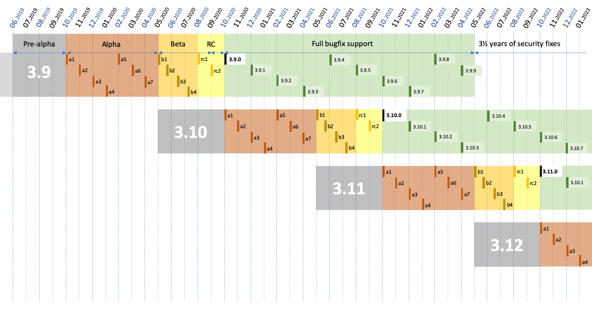
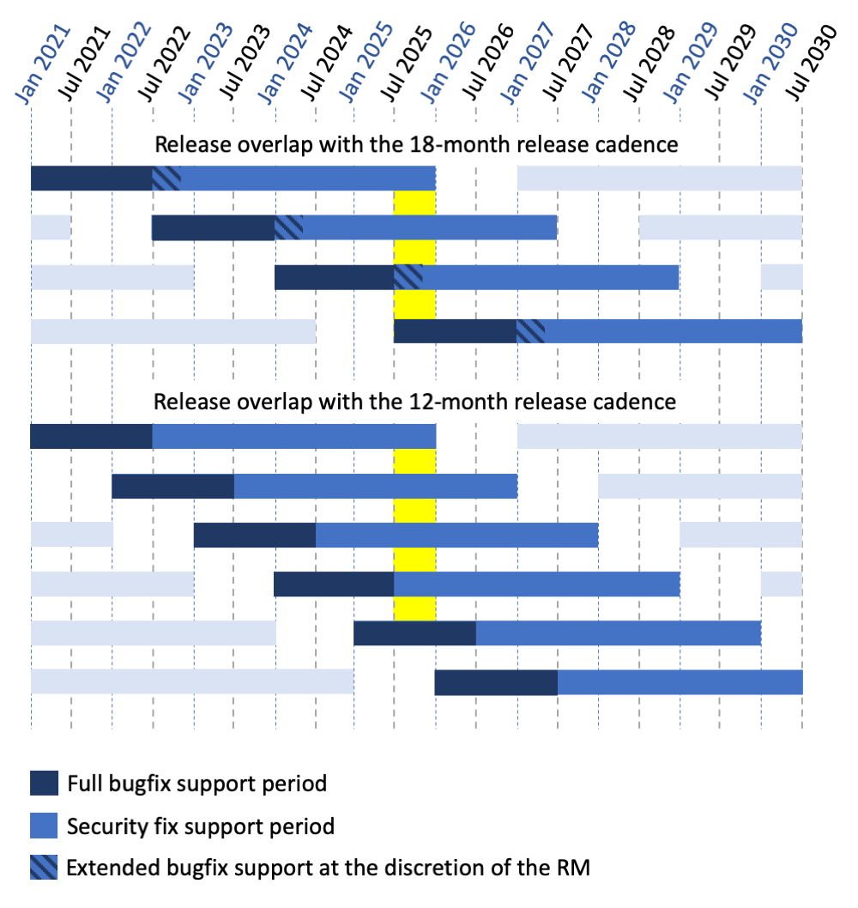

PEP 602 – Annual Release Cycle for Python¶
- PEP
- 602
- Title
- Annual Release Cycle for Python
- Author
- Łukasz Langa <lukasz at python.org>
- BDFL-Delegate
- Brett Cannon (on behalf of the steering council)
- Discussions-To
- https://discuss.python.org/t/pep-602-annual-release-cycle-for-python/2296/
- Status
- Accepted
- Type
- Informational
- Created
- 04-Jun-2019
- Python-Version
- 3.9
Contents
Abstract¶
This document describes a change in the release calendar for Python starting with Python 3.9. This change accelerates the release cadence such that major versions are released predictably every twelve months, in October every year.
Implementation¶
Seventeen months to develop a major version¶
This PEP proposes that Python 3.X.0 will be developed for around 17 months:
- The first five months overlap with Python 3.(X-1).0’s beta and release candidate stages and are thus unversioned.
- The next seven months are spent on versioned alpha releases where both new features are incrementally added and bug fixes are included.
- The following three months are spent on four versioned beta releases where no new features can be added but bug fixes are still included.
- The final two months are spent on two release candidates (or more, if necessary) and conclude with the release of the final release of Python 3.X.0.
1½ year of full support, 3½ more years of security fixes¶
After the release of Python 3.X.0, the 3.X series is maintained for five years:
- During the first eighteen months (1½ year) it receives bugfix updates and full releases (sources and installers for Windows and macOS) are made approximately every other month.
- For the next forty two months (3½ years) it receives security updates and source-only releases are made on an as-needed basis (no fixed cadence).
- The final source-only release is made five years after 3.X.0.
Annual release cadence¶
Feature development of Python 3.(X+1).0 starts as soon as Python 3.X.0 Beta 1 is released. This creates a twelve month delta between major Python versions.
Example¶
- 3.9 development begins: Tuesday, 2019-06-04
- 3.9.0 alpha 1: Monday, 2019-10-14
- 3.9.0 alpha 2: Monday, 2019-11-18
- 3.9.0 alpha 3: Monday, 2019-12-16
- 3.9.0 alpha 4: Monday, 2020-01-13
- 3.9.0 alpha 5: Monday, 2020-02-17
- 3.9.0 alpha 6: Monday, 2020-03-16
- 3.9.0 alpha 7: Monday, 2020-04-13
- 3.9.0 beta 1: Monday, 2020-05-18 (No new features beyond this point.)
- 3.9.0 beta 2: Monday, 2020-06-08
- 3.9.0 beta 3: Monday, 2020-06-29
- 3.9.0 beta 4: Monday, 2020-07-20
- 3.9.0 candidate 1: Monday, 2020-08-10
- 3.9.0 candidate 2: Monday, 2020-09-14
- 3.9.0 final: Monday, 2020-10-05
{kind=link}

Figure 1. Consequences of the annual release cycle on the calendar.¶
In comparison, if this PEP is rejected and Python keeps the current release schedule:
- 3.9 development begins: Tuesday, 2019-06-04
- 3.9.0 alpha 1: Monday, 2020-08-03 (10 months later)
- 3.9.0 alpha 2: Monday, 2020-09-07
- 3.9.0 alpha 3: Monday, 2020-10-05
- 3.9.0 alpha 4: Monday, 2020-11-02
- 3.9.0 beta 1: Monday, 2020-11-30 (6 months later)
- 3.9.0 beta 2: Monday, 2021-01-04
- 3.9.0 beta 3: Monday, 2021-02-01
- 3.9.0 beta 4: Monday, 2021-03-01
- 3.9.0 candidate 1: Monday, 2021-03-29
- 3.9.0 candidate 2: Monday, 2021-04-05 (if necessary)
- 3.9.0 final: Monday, 2021-04-19 (6 months later)
Dependent Policies¶
Deprecations¶
The current policy around breaking changes assumes at least two releases
before a deprecated feature is removed from Python or a __future__
behavior is enabled by default. This is documented in PEP 387.
This PEP proposes to keep this policy of at least two releases before making a breaking change.
The term of the Steering Council¶
The current wording of PEP 13 states that “a new council is elected after each feature release”. This PEP proposes to keep this policy as it will lead to a consistent election schedule.
The term of the Release Manager¶
The current undocumented convention is for a single Release Manager to handle two feature releases of Python. This PEP proposes to keep this policy, allowing for the term to be extended to more releases with approval from the Steering Council and the Cabal of Release Managers.
In particular, since this PEP is authored by the active Release Manager and its effect would shorten the term of the Release Manager, the author is open to managing the release of a third feature release to compensate for the disruption.
Rationale and Goals¶
This change provides the following advantages:
- makes releases smaller: since doubling the cadence doesn’t double our available development resources, consecutive releases are going to be smaller in terms of features;
- puts features and bug fixes in hands of users sooner;
- creates a more gradual upgrade path for users, by decreasing the surface of change in any single release;
- creates a predictable calendar for releases where the final release is always in October (so after the annual core sprint), and the beta phase starts in late May (so after PyCon US sprints), which is especially important for core developers who need to plan to include Python involvement in their calendar;
- decreases the urge to rush features shortly before “Beta 1” due to the risk of them “slipping for 18 months”;
- allows for synchronizing the schedule of Python release management with external distributors like Fedora who’ve been historically very helpful in finding regressions early not only in core Python but also in third-party libraries, helping moving the community forward to support the latest version of Python from Day 1;
- increases the explicit alpha release phase, which provides meaningful snapshots of progress on new features;
- significantly cuts the implicit “alpha 0” release phase which provides limited use for new development anyway (it overlaps with the beta of the currently developed, still unreleased, version).
Non-goals¶
Adopting an annual release calendar allows for natural switching to calendar versioning, for example by calling Python 3.9 “Python 3.20” since it’s released in October ‘20 and so on (“Python 3.23” would be the one released in October ‘23).
While the ease of switching to calendar versioning can be treated as an advantage of an annual release cycle, this PEP does not advocate for or against a change in how Python is versioned. Should the annual release cycle be adopted, the versioning question will be dealt with in a separate PEP.
Non-risks¶
This change does not shorten the currently documented support calendar for a Python release, both in terms of bugfix releases and security fixes.
This change does not accelerate the velocity of development. Python is not going to become incompatible faster or accrue new features faster. It’s just that features are going to be released more gradually as they are developed.
Consequently, while this change introduces the ability for users to upgrade much faster, it does not require them to do so. Say, if they upgrade every second release, their experience with Python is going to be similar to the current situation.
Risks¶
Python redistribution¶
This requires changes to how integrators, like Linux distributions, release Python within their systems.
The testing matrix¶
This eventually increases the testing matrix for library and application maintainers that want to support all actively supported Python versions by one or two:
{kind=link}

Figure 2. Testing matrix in the 18-month cadence vs. the 12-month¶
The “extended bugfix support at the discretion of the Release Manager” stage of the current release cycle is not codified. If fact, PEP 101 currently states that after the release of Python 3.(X+1).0 only one last bugfix release is made for Python 3.X.0. However, in practice at least the last four versions of Python 3 overlapped with stable releases of the next version for around six months. Figure 2 is including this information to demonstrate that overlap between stable version releases with the 12-month release cadence will be nothing new.
Other policies may depend on the release cadence¶
Although identified dependent policies were addressed in a previous section, it is entirely possible there are some other areas which implicitly rely on the timing of Python releases.
Rejected Ideas¶
Keep the current 18 month release cadence¶
This is undesirable both for core developers and end users. From the perspective of the core developer:
- it makes contribution scheduling harder due to irregular release dates every year;
- it creates a surge of rushed commits before (and even after!) Beta 1 due to the stress involved with “missing a release”;
- ironically, after Beta 1 it creates a false sense of having “plenty of time” before the next release, time that passes quickly regardless;
- it causes certain elements of the workflow to be executed so rarely that they are not explicitly documented, let alone automated.
More importantly, from the perspective of the user:
- it creates releases with many new features, some being explicitly incompatible and some being accidentally incompatible, which makes the upgrade cost relatively high every time;
- it sits on features and incompatible bug fixes for over a year before becoming available to the user; and more specifically
- it causes every “point zero” release to be extra risky for users. While we provide and recommend testing with alphas and betas, “point zero” is the first release of a given Python version for many users. The bigger a release is feature-wise, the more potential problems are hiding in “point zero releases”.
Double the release cadence to achieve 9 months between major versions¶
This was originally proposed in PEP 596 and rejected as both too irregular and too short. This would not give any of the benefits of a regular release calendar but it would shorten all development phases, especially the beta + RC phases. This was considered dangerous.
Keep “4 betas over 4 months and a final month for the release candidate”¶
While this would make the release calendar a bit cleaner, it would make it very hard for external distributors like Fedora to release the newest version of Python as soon as possible. We are adjusting Python’s calendar here in the hope that this will enable Fedora to integrate the newest version of Python with the newest version of Fedora as both are being developed which makes both projects better.
Slow down releases but don’t freeze feature development with Beta 1¶
This is described in PEP 598. This proposal includes non-standard concepts like the “incremental feature release” which makes it hard to understand. The presented advantages are unclear while the unfamiliarity of the scheme poses a real risk of user and integrator confusion.
Long-Term Support Releases¶
Each version of Python is effectively long-term support: it’s supported for five years, with the first eighteen months allowing regular bug fixes and security updates. For the remaining time security updates are accepted and promptly released.
No extended support in the vein of Python 2.7 is planned going forward.